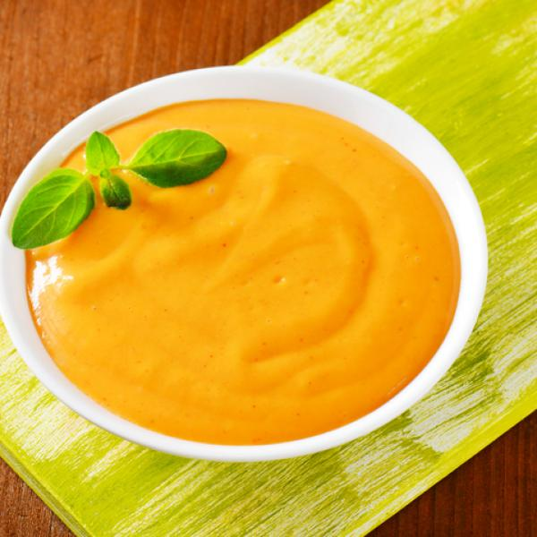

Mayonesa de papa y zanahoria

Ingredientes:
- 1 taza de zanahorias cocidas
- 2 papas medianas cocidas
- 3 cdas. de jugo de limón
- 1 taza de aceite
- 3 cdas. de leche en polvo
- Sal y pimienta al gusto
Preparación
- Llevar todo a la licuadora
- Si faltara fluidez a la mayonesa agregar agua o caldo de cocción